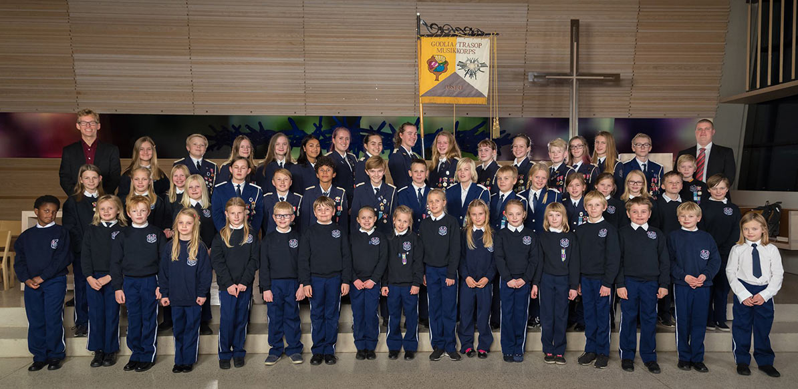
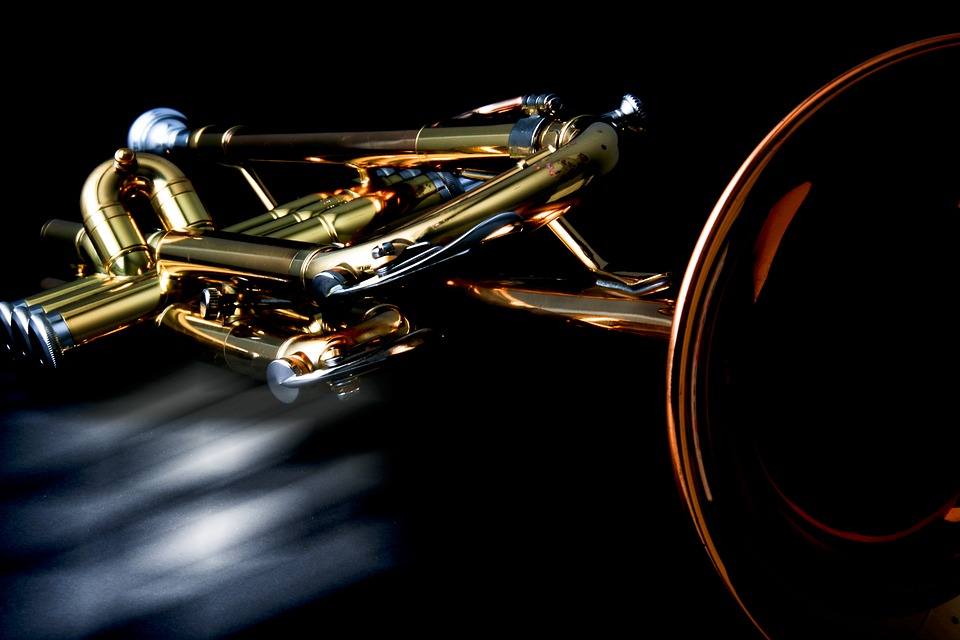

Korpset består av 60 barn fordelt på aspirantkorps, juniorkorps og hovedkorps.
Medlemmene kommer hovedsaklig fra naboskolene Godlia, Trasop og Skøyenåsen, men vi tar også opp musikanter fra skoler i nærområdet som ikke har egne korps.
Korpset hadde 35-årsjubileum i 2017, og har de siste årene hatt en gledelig vekst i antall musikanter.

Loppemarkedet er korpsets viktigste inntektskilde og er et trivelig og ryddig marked med byens beste kaker.
Høstens loppemarked er over for denne gang, neste loppemarked er våren 2019. Men vi tar i mot lopper gjennom året.
Godlia/Trasop skolers musikkorps er et foreldredrevet musikkorps hvor årsmøtet velger
et styre som står for driften av korpset i styreperioden.
Godlia/Trasop har tre forskjellige korps: aspirantkorps, juniorkorps og hovedkorps.

Instruktører, dirigenter, uniform.
Datoer og tidspunkter.